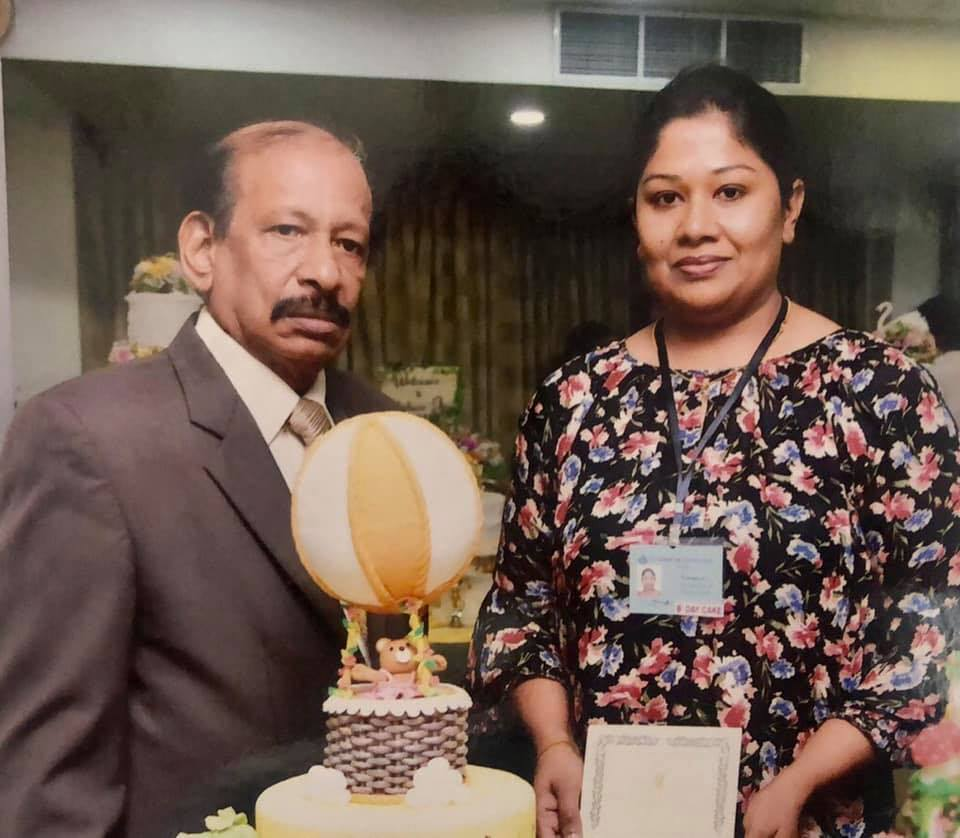

- Birthday Cakes
- Anniversary Cakes
- Cup Cakes
- Wedding Cakes
- Engagement Cakes
- Customized Cakes
About

My name is Anuradha Heenatigala. I am a student of the famous cake artist Clemant. I have successfully completed the cake program and then started my own small business as a cake artist. Furthermore, by having many recommendations, the business grew little by little to be one of the most tastiest and nicest cakes in Ampitiya area in Kandy Sri Lanka. My ambition is to make a name in the cake industry in Sri Lanka and widen my business to many areas in Sri Lanka. Right now our deliveries are only to the Kandy area. It is expected to expand. My instagram is provided in the website under socials and you can even click here to see my work.